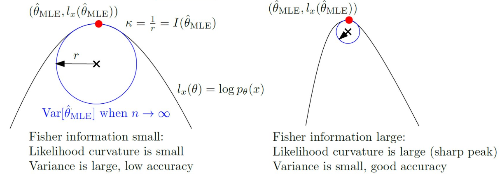

Definition
\begin{equation} \mathcal{I}(\theta) = - \mathbb{E} \left[\frac{\partial^2}{\partial \theta} \log p_{\theta} (x)\right], \end{equation} where $\log p_{\theta} (x)$ is the $score$ of the distribution $p$.Visualization

Taylor 2nd order with $l^\prime (\hat{\theta}_{\text{MLE}}) = 0$:
\[
l_x (\theta) \approx l_x(\hat{\theta}_{\text{MLE}}) + \frac{1}{2} (\theta-\hat{\theta}_{\text{MLE}})^2 l_{\text{MLE}}^{\prime \prime} (\hat{\theta}_{\text{MLE}})
\]
$\implies$ $l_x(\theta) \approx l_x(\hat{\theta}_{\text{MLE}}) - \frac{1}{2} (\theta - \hat{\theta}_{\text{MLE}})^2 I (\hat{\mathcal{\theta}}_{\text{MLE}})$